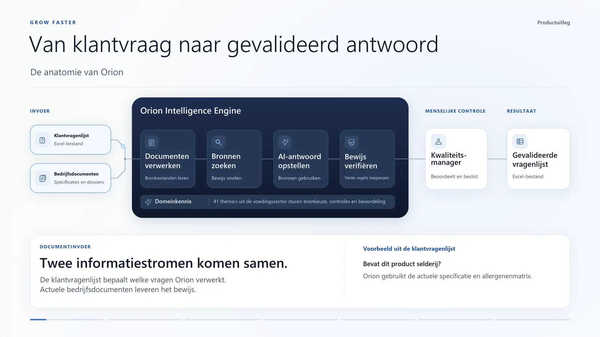

Eén verspilling.
Een verspilling die u in bijna elke kmo terugvindt.
Elke maand één verspilling in uw bedrijf, en hoe automatisering en AI ze wegnemen. Een kwartier lezen.
Een verspilling die u in bijna elke kmo terugvindt.
Hoe die verspilling eruitziet in een kmo, met één cijfer en de bron.
De stappen om ze weg te werken, met automatisering en AI waar het helpt.
Hoeveel tijd en geld u terugwint, en hoe u dat meet.
Over bestellingen, specificaties en vragenlijsten die iemand van het ene document naar het andere overtypt. Tweeëndertig pagina's, een kwartier lezen.
Elke maand één verspilling
Over bestellingen, specificaties en vragenlijsten die iemand van het ene document naar het andere overtypt.
Ook in deze editie: het telformulier, de checklist en wat Orion doet
grow-faster.be
Dit magazine gaat elke maand over één verspilling in de kmo. Niet over AI in het algemeen, niet over de toekomst van werk, maar over één soort werk dat tijd kost en niets oplevert, en over wat u er in een paar weken aan kunt doen.
Ik heb twintig jaar in grote bedrijven gewerkt aan processen, planning en manieren van werken. Wat ik daar leerde, geldt ook voor een bedrijf met vijftien mensen: de grootste verspilling is zelden de zichtbare. Het is niet de machine die stilstaat, maar de vijftig keer per dag dat iemand iets overtypt wat al ergens stond.
Daarom begint deze reeks met overtypen. Het is de verspilling waar bijna elke kmo mee zit, en de eerste die met de huidige technologie verdwijnt zonder dat u uw systemen hoeft te vervangen.
Een cijfer zonder bron staat hier niet in. Reacties en voorbeelden uit uw eigen bedrijf zijn welkom via info@grow-faster.be. De beste voorbeelden komen in een volgende editie, anoniem als u dat wilt.
Erlend HolleboschOprichter van Grow Faster. Twintig jaar ervaring in procesverbetering, programmamanagement en transformatie.
Wat u na een kwartier lezen weet, en wat u maandag kunt doen.
Vijf punten
Deze editie in drie cijfers
Deel 1
Werk dat niets toevoegt, op geen enkele functieomschrijving staat en toch elke dag gebeurt.
Overtypen kost twee keer: de tijd om te typen, en de tijd om de fouten te vinden die erin slopen. En dan is er nog een derde kost, die het moeilijkst te zien is.
Overtypen is gegevens die al ergens staan, met de hand opnieuw invoeren in een ander document of systeem. Een bestelling uit een mail in het ERP. Een leveringsbon in Excel. De samenstelling van een product uit de specificatie in de vragenlijst van een klant.
Niemand noemt het werk. Het staat op geen enkele functieomschrijving en op geen enkele factuur. Het zit tussen twee taken in, en daarom ziet niemand hoeveel het kost. Vraag een medewerker hoeveel tijd hij overtypt, en hij schat te laag. Hij telt de grote blokken, niet de tientallen minuten per dag.
Het staat op geen enkele functieomschrijving en op geen enkele factuur.
Overtypen kost twee keer. Eerst de tijd om te typen. Daarna de tijd om de fouten te vinden die erin slopen, en de tijd van de klant of de collega die ze als eerste opmerkt.
Er is nog een derde kost, en die is het moeilijkst te zien. Wie overtypt, doet ondertussen niets anders. De kwaliteitsmedewerker die een vragenlijst invult, controleert op dat moment geen leverancier. De boekhouder die leverbonnen overtikt, belt op dat moment geen klant die te laat betaalt. Overtypen verdringt het werk waarvoor iemand is aangenomen.
De minuten om een gegeven te zoeken en opnieuw in te voeren.
De tijd om fouten te vinden en recht te zetten, vaak door iemand anders.
Het werk dat ondertussen niet gebeurt: controleren, verbeteren, klanten antwoorden.
Alleen de eerste kost is makkelijk te meten. Daarom wordt overtypen bijna altijd onderschat.
Hoe herkent u het?
Staat dit gegeven al ergens in het bedrijf? Wordt het nu door een mens opnieuw ingetikt? Zou een collega het verschil zien als de computer het deed? Drie keer ja, dan is het overtypen.
Het verschil met gewoon administratief werk is dit: bij administratief werk voegt iemand iets toe. Een beoordeling, een keuze, een handtekening. Bij overtypen voegt niemand iets toe. De informatie is aan het eind precies dezelfde als aan het begin, alleen staat ze op een andere plaats, met een kans op fouten erbij.
Dat onderscheid is belangrijk voor wat volgt. Administratief werk vraagt een mens. Overtypen niet. Wie de twee uit elkaar haalt, ziet welk deel van het werk de computer kan overnemen en welk deel bij de medewerker blijft.
Bij overtypen voegt niemand iets toe.
De plekken hieronder komen uit wat we in Vlaamse kmo's zien, in de voeding, de techniek en de logistiek. Ze zijn niet uitputtend. Streep aan wat u herkent.
Wat de zes gemeen hebben
De bron is altijd een document dat al bestaat. Daarom is overtypen de verspilling die het eerst verdwijnt: de computer kan documenten vandaag lezen, en een mens hoeft alleen nog na te kijken.
Om kwart over acht komt een bestelling binnen als pdf. Iemand tikt ze in het ERP. Om tien uur brengt de chauffeur een leverbon; de aantallen gaan in Excel. Na de middag vraagt een retailer een bijgewerkte specificatie, en de rest van de namiddag gaat naar een vragenlijst van 150 vragen.
Geen van die taken duurt lang. Samen vullen ze een dag. En bij elk ervan staat de informatie al ergens: in een mail, een pdf, een foto van een bon, een ingevuld formulier.
Deze dag is een illustratie, samengesteld uit situaties die in kmo's vaak voorkomen.
Deel 2
Vijf retailers, vijf vragenlijsten, dezelfde antwoorden. Wat dat kost in uren, en wat het kost in fouten.
Een voedingsbedrijf levert aan vijf retailers. Elke retailer stuurt jaarlijks zijn eigen vragenlijst. Dezelfde vragen, telkens in een ander formaat.
Elke lijst vraagt naar allergenen, herkomst, certificaten en samenstelling. Een medewerker van de kwaliteitsdienst zoekt de antwoorden in de specificaties en de oude lijsten, en typt ze over in het nieuwe formulier.
Reken mee. Vijf retailers, elk een lijst van 150 vragen, en per vraag gemiddeld drie minuten zoeken en typen. Dat is 37 uur per jaar aan overtypen, alleen voor die vijf lijsten. Komt er een nieuwe klant bij, of een nieuwe versie van een product, dan begint het opnieuw.
Rekenvoorbeeld, geen meting: 5 × 150 vragen × 3 minuten = 2.250 minuten per jaar.
Onderzoek in de zorg, waar overgetypte gegevens nauwkeurig worden nagekeken, vindt gemiddeld 2,8 fouten per 100 overgetypte velden. Bij vrije tekst loopt dat op tot 6,4 per 100. Bij 750 velden per jaar zijn dat 21 fouten, waarvan een deel over allergenen gaat. Eén verkeerd allergeen in een klantdossier kost meer dan alle uren samen.
Laagste veldGemiddeld over alle veldenHoogste veld, vrije tekst
Bron: Hong et al., BMJ Open, 2013. Tekstvelden zijn foutgevoeliger dan cijfers.
De lijst gaat naar de retailer. Die leest ze in in zijn eigen systeem. Maanden later staat het product in de winkel met een etiket dat op die lijst is gebaseerd. Als het allergeen verkeerd was, is het etiket verkeerd. Het bedrijf hoort het van de retailer, van een klant, of van de inspectie. De kost zit dan niet meer in uren, maar in een terugroeping, een boete of een verloren klant.
21 fouten per jaar in gegevens over allergenen kan niemand wegwuiven.
Daarom is tijd het makkelijkste argument, maar niet het belangrijkste. 37 uur per jaar is een week werk. Dat voelt als veel, maar een zaakvoerder kan het wegwuiven. 21 fouten per jaar in gegevens over allergenen kan niemand wegwuiven.
In de leer van Lean, die ontstond in de autobouw, heet verspilling alles wat tijd of geld kost zonder dat de klant er iets van terugziet. Overtypen valt onder twee soorten tegelijk: overbodige bewerking, omdat dezelfde informatie twee keer wordt gemaakt, en wachten, omdat de volgende stap pas kan beginnen als het typen klaar is.
Toch staat overtypen zelden op de lijst van verbeterpunten. Daar zijn drie redenen voor.
Daarom begint de aanpak niet met technologie, maar met tellen. Wie zijn eigen cijfer heeft, ziet de verspilling. Wie ze ziet, wil ervan af.
Deel 3
Vier stappen. Geen nieuw systeem. Eén taak om mee te beginnen.
Begin met één taak die vaak terugkomt, niet met het hele bedrijf. Een pilot van een paar weken toont of de aanpak werkt, voor u verder investeert.
Wat u niet moet doen
Eerst een nieuw systeem kopen. De verspilling zit niet in uw ERP of uw boekhoudpakket, maar in de weg ernaartoe. De aanpak werkt met de systemen die u hebt, omdat de mens de laatste stap zelf zet, in zijn eigen systeem.
Kies de taak die aan drie voorwaarden voldoet: ze komt minstens elke week terug, de bron is een document dat u al hebt, en een fout erin is vervelend of erger.
Een jaarlijkse taak levert te weinig op om mee te beginnen. Een taak zonder document als bron kan de computer niet lezen. Een taak waar een fout niemand stoort, overtuigt niemand.
Druk deze pagina af of maak er een blad van in Excel. Eén regel per keer dat u iets overtypt. Twee weken lang, zonder iets aan uw werk te veranderen.
| Datum | Welk gegeven | Vandaan | Naartoe | Minuten | Fout achteraf |
|---|---|---|---|---|---|
Welk gegeven: bestelling, leverbon, vragenlijst, fiche, verslag, factuur, ander. Vandaan: mail, pdf, papier, ander systeem.
Na twee weken telt u drie dingen: het totaal aantal minuten, het aantal regels per soort gegeven, en het aantal regels met een fout. Vermenigvuldig de minuten met 26 voor een jaarcijfer.
Tel ook de keren dat u iets opzoekt om het daarna over te typen; het zoeken hoort erbij. En laat de medewerker zelf tellen, niet zijn chef. Wie zelf telt, gelooft het cijfer.
04Deel 4
De winst in uren is het makkelijkst te tonen. De winst in fouten is het grootst. Meet drie dingen, voor en na.
| Wat u meet | Hoe | Wat u mag verwachten |
|---|---|---|
| Tijd per taak | Stopwatch bij tien taken, voor en na | Typen verdwijnt, nakijken blijft. Reken op een halvering of meer per taak. |
| Fouten | Steekproef van 100 velden, nagekeken door een collega | Van enkele fouten per 100 velden naar bijna nul, omdat elk antwoord een bron toont. |
| Doorlooptijd | Datum van aanvraag tot verzending | Een vragenlijst die een week bleef liggen, is dezelfde dag klaar. |
Conclusie
Een kwaliteitsmedewerker die niet meer typt, heeft tijd voor het werk waarvoor hij is aangenomen: controleren, verbeteren, de klant antwoorden.
Er is ook een winst die u niet meet maar wel merkt. Een klant die zijn vragenlijst binnen de dag terugkrijgt, in plaats van na een week, onthoudt dat. Bij de volgende audit of de volgende aanbesteding telt dat mee. Een medewerker die niet meer overtypt, blijft langer. Dat laatste is in een krappe arbeidsmarkt misschien de grootste winst van allemaal.
Wat het niet oplevert: minder mensen. De medewerker blijft nodig, want hij kijkt na en beslist. Wie automatisering inzet om te besparen op mensen, krijgt een medewerker die de automatisering tegenwerkt. Wie ze inzet om het overtypen weg te nemen, krijgt een medewerker die het zelf verder uitbouwt.
Orion is de software van Grow Faster voor klantvragenlijsten. Zo weet u waar u aan toe bent.

Wat Orion doet
U laadt de vragenlijst op zoals u ze kreeg, in Excel of Word. Orion zoekt de antwoorden in de documenten die u eerder hebt opgeladen: specificaties, certificaten, technische fiches, goedgekeurde antwoorden van vroeger. Bij elk antwoord staat uit welk document het komt. Vragen waar een fout zwaar weegt, zoals allergenen, staan apart gemarkeerd. Vindt Orion geen bron, dan zegt het dat.
Wat Orion niet doet
Orion verstuurt nooit zelf iets. Het schrijft niet in uw ERP of uw kwaliteitssysteem. Het verzint geen antwoord als er geen bron is. Uw medewerker keurt goed en verstuurt.
Wat Orion onthoudt
Elk antwoord dat u goedkeurt, onthoudt Orion. De volgende vragenlijst gaat daardoor sneller.
Voor leverbonnen, verslagen en facturen werkt Grow Faster met dezelfde aanpak: de computer leest, bereidt een concept voor, een mens kijkt na en zet de laatste stap. Welke software daarbij past, hangt af van uw taak en uw systemen. Dat bekijken we in een pilot.
Beantwoord voor één taak de vragen hieronder. Zes keer ja: begin ermee. Vier of vijf keer ja: bespreek ze. Minder: kies een andere taak.
Uw score
Zes keer ja: dit is uw eerste taak. Tel ze twee weken met het formulier op pagina 21.
Volgende stap
Vertel ons waar uw team vandaag tijd verliest. In een eerste gesprek van een half uur kijken we welke taak u het eerst aanpakt en wat u terugwint. Ziet u na de pilot geen verschil, dan stoppen we.
Liever mailen? info@grow-faster.be
grow-faster.be
De foutpercentages komen uit de zorg, waar overgetypte gegevens systematisch worden nagekeken. Voor de kmo is geen vergelijkbare Belgische meting gevonden. Tel het daarom eerst in uw eigen bedrijf. Het rekenvoorbeeld op pagina 13 en de dinsdag op pagina 11 zijn illustraties, geen metingen.
Erlend Hollebosch is de oprichter van Grow Faster. Hij werkte twintig jaar aan procesverbetering, programmamanagement en transformatie, onder meer in retail, industrie en telecom. Met Grow Faster helpt hij Vlaamse kmo's om het overtypen en zoeken uit hun werk te halen.
Grow Faster Magazine verschijnt elke maand en behandelt telkens één verspilling in de kmo. Tekst: Erlend Hollebosch. Reacties en voorbeelden uit uw bedrijf zijn welkom via info@grow-faster.be.
Beelden: gemaakt met AI voor deze editie. Ze tonen geen bestaande personen, bedrijven of merken. Het schema op pagina 24 komt uit de Orion-film van Grow Faster.
De beste voorbeelden komen uit bedrijven zoals het uwe. Stuur ons het uwe, en we nemen het mee in een volgende editie, anoniem als u dat wilt.
Drie vragen volstaan. Welke taak tikt iemand in uw bedrijf over? Waar komen de gegevens vandaan, en waar moeten ze naartoe? Hoeveel minuten kost het per week, ongeveer of geteld?
Stuur het naar info@grow-faster.be
We publiceren niets zonder uw akkoord.
Volgende editie
Het verschil tussen bon en levering. Een leverbon zegt 24 dozen, er staan er 22. Wie merkt het, wanneer, en wat kost het als niemand het merkt voor de factuur betaald is?
grow-faster.be
Pagina
Blader met de knoppen, de pijltjestoetsen of een veeg over de pagina.
De edities vormen samen het boek dat Erlend Hollebosch schrijft over procesautomatisering en AI in de kmo.
Vertel ons waar uw team vandaag tijd verliest. In een eerste gesprek kijken we wat u terugwint.
This website uses as few cookies and similar techniques as possible. Necessary storage remembers your cookie choice and language, and cannot be refused. Only with your consent are typefaces loaded from Google Fonts, which then receives your IP address. Also only with your consent, we count visits anonymously with GoatCounter, without cookies. If you refuse, the website works fully and uses the fonts on your device. You can change or withdraw your choice at any time via Cookie settings at the bottom of every page. Responsible: Erlend Hollebosch.
Remember your cookie choice and language, and deliver the website securely.
Stored in your browser: your consent choice and your language. Nothing is sent to us. Our host processes technical data, such as your IP address, to deliver the page.
Load typefaces from Google Fonts. Google receives your IP address.
Provider: Google Ireland Ltd. Purpose: displaying typefaces. If you refuse, nothing is loaded from Google and the site uses fonts already on your device.
Count visits anonymously with GoatCounter. No cookies, no stored IP addresses.
Provider: GoatCounter, servers in the EU. Purpose: aggregated visitor statistics, such as pages viewed, referring website, browser and country. Your IP address is only used briefly to count unique visits and is not stored.